Setup TPA on OpenShift
Overview
This guide covers the installation and configuration of Trusted Profile Analyzer (TPA) on OpenShift Container Platform. TPA on OpenShift leverages container orchestration for scalable and efficient security analysis workflows.
To install TPA on OpenShift, we have two options:
-
The Operator-based install
-
The
helminstall, using the official helm chart from theopenshift-helm-chartsrepository
|
We will go through both installation paths, but there are some prerequisites that we need to look at first:
|
Prerequisites
For ease of use, we have prepared some k8s artifacts and helper scripts that you can use. Please open the {openshift_console_url}/terminal[terminal^,window="terminal"], logging in as {openshift_admin_user} / {openshift_admin_password}.
Then, clone the following repository:
It’s a linux terminal, so use <ctrl><shift><v> for pasting 🐧
|
git clone https://github.com/redhat-tssc-tmm/l3-enablement-helpers.git
cd l3-enablement-helpersWhile we’re here let’s quickly create two projects to install TPA, one for the operator-based install, one for the helm-based install.
The instructions will use that namespace, but you’re free to choose any name / namespace you want. Just make sure to change it appropriately in the instructions that follow.
oc new-project student-tpa-helm
oc new-project student-tpa-operatorStorage
For (object-)storage, the recommended and supported option is to use S3, provided either by ODF (OpenShift Data Foundations) or Amazon S3.
However, for PoC purposes and tests without S3 available, filesystem is also a configuration option that is recognized by the helm Chart and the helm-based Operator. This effectively triggers the helm chart to spin up a PVC.
|
If you choose With the help from OpenShift’s internal PVC/pod affinity rules, this should work in most cases, but it is definitely not recommended for production. |
$ oc get pods
NAME READY STATUS RESTARTS AGE
importer-666b79c69b-vf2ff 1/1 Running 2 (55m ago) 173m
server-7555686b95-hkq9r 1/1 Running 0 173m
tpa-postgresql-7d4694d455-gtzrg 1/1 Running 1 (57m ago) 3h2m
$ oc get pod importer-666b79c69b-vf2ff -o jsonpath='{range .spec.volumes[?(@.persistentVolumeClaim)]}{.name}{" (PVC: "}{.persistentVolumeClaim.claimName}{")"}{"\n"}{end}{range .spec.containers[*].volumeMounts[?(@.name=="storage")]}{"\tMount: "}{.mountPath}{"\n"}{end}'
storage (PVC: storage)
Mount: /data/storage
$ oc get pod importer-666b79c69b-vf2ff -o jsonpath='{range .spec.volumes[?(@.persistentVolumeClaim)]}{.name}{" (PVC: "}{.persistentVolumeClaim.claimName}{")"}{"\n"}{end}{range .spec.containers[*].volumeMounts[?(@.name=="storage")]}{"\tMount: "}{.mountPath}{"\n"}{end}'
storage (PVC: storage)
Mount: /data/storageS3 Storage using ODF
On the cluster, we have installed ODF, which is part of OPP (OpenShift Platform Plus), so we expect customers to use it for production-grade S3.
With ODF installed, all you need to do is create an ObjectBucketClaim. We have prepared that for you in the /prerequisites folder, so:
-
Make sure you are in your desired namespace (the generated bucket is namespace-scoped)
-
Go into the directory and create it
cd ~/l3-enablement-helpers/prerequisites/
oc project student-tpa-operator
oc apply -f tpa_objectbucketclaim.yamlbash-5.1 ~ $ cd l3-enablement-helpers/prerequisites/
bash-5.1 ~/l3-enablement-helpers/prerequisites $ oc project student-tpa-operator
Already on project "student-tpa-operator" on server "https://172.31.0.1:443".
bash-5.1 ~/l3-enablement-helpers/prerequisites $ ls -al
total 24
drwxr-xr-x. 2 user root 173 Oct 17 16:14 .
drwxr-xr-x. 4 user root 71 Oct 17 16:14 ..
-rw-r--r--. 1 user root 674 Oct 17 16:14 client_tpa-cli.json
-rw-r--r--. 1 user root 776 Oct 17 16:14 client_tpa-frontend.json
-rw-r--r--. 1 user root 2931 Oct 17 16:14 postgresql-openshift.yaml
-rwxr-xr-x. 1 user root 440 Oct 17 16:14 s3.sh
-rw-r--r--. 1 user root 134 Oct 17 16:14 secret-oidc-cli.yaml
-rw-r--r--. 1 user root 181 Oct 17 16:14 tpa_objectbucketclaim.yaml
bash-5.1 ~/l3-enablement-helpers/prerequisites $ oc apply -f tpa_objectbucketclaim.yaml
objectbucketclaim.objectbucket.io/tpa-bucket-claim created
bash-5.1 ~/l3-enablement-helpers/prerequisites $ ./s3.sh
Access Key ID:
uQJELScAXek96XcUUrAl
Secret Access Key:
OFCB8spseTxVPFrUTc3nZecqi+D51IpIpvLBo9gt
Endpoint:
https://s3-openshift-storage.apps.cluster-mdt2d.dynamic.redhatworkshops.io
Bucket Name:
trustify-c443fd04-cc20-4455-ac54-f02921669428
bash-5.1 ~/l3-enablement-helpers/prerequisites $
As you can see above, we have created a little script (s3.sh) that lists the data from the secret and the configmap that is automatically created for the bucket. We will need that for the values file (both for the operator and the helm chart)
|
Database (postgresql)
TPA requires a postgresql database for the graph database. We have prepared the a yaml file with the required k8s artifacts, that you can simply apply.
Please take note of the secret (first object in the yaml file) as it contains all the data that we need for the values file (both operator and helm install).
Specifically, we need a "regular" database user (tpauser) and an admin user that can create the database (postgres).
bash-5.1 ~/l3-enablement-helpers/prerequisites $ cat postgresql-openshift.yaml
---
apiVersion: v1
kind: Secret
metadata:
name: tpa-postgresql-credentials
labels:
app: tpa-postgresql
type: Opaque
stringData:
db.host: "tpa-postgresql"
db.name: "tpadb"
db.user: "tpauser"
db.password: "r3dh8t1!"
db.admin: "postgres"
db.adminpassword: "adminr3dh8t1!"
db.port: "5432"
---oc apply -f postgresql-openshift.yamlbash-5.1 ~/l3-enablement-helpers/prerequisites $ oc apply -f postgresql-openshift.yaml
secret/tpa-postgresql-credentials created
persistentvolumeclaim/tpa-postgresql-data created
deployment.apps/tpa-postgresql created
service/tpa-postgresql created
bash-5.1 ~/l3-enablement-helpers/prerequisites $OIDC setup
We are using RHBOK (Red Hat build of Keycloak) here, but you can also use Amazon Cognito. Refer to the product documentation for that setup if you’re using Cognito. However, we need to configure OIDC scopes and redirect URLs and we’ll show you using Keycloak.
|
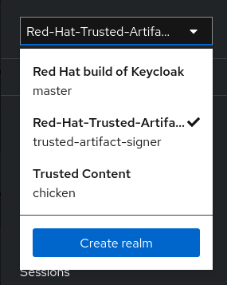 |
We already have a working install of TPA that we’ll use in later exercises - this uses the |
With that said - let’s use the |
Clients, Client Scopes and RBAC
Using the same realm as other applications, we share the same user base.
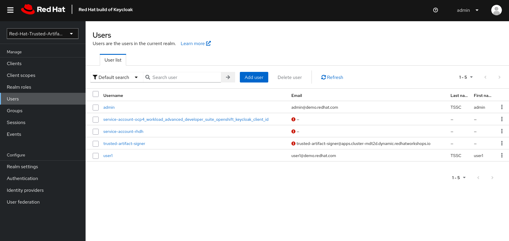
Applications might have different requirements for authentication, though. Therefore, it is a good practice to define one or more clients for each application that allows the users of a given realm to authenticate.
For the realm we’re about to use, we have a set of default clients (for typical OIDC and Keycloak use cases) as well as a client for Trusted Artifact Signer, one for Developer Hub and one for OpenShift.
We will add our clients here (we’ll name them tpa-frontend and tpa-cli)
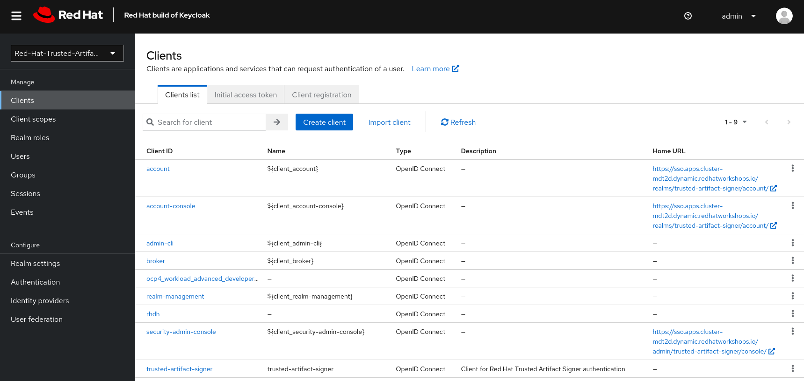
In addition to Clients, TPA uses Client Scopes for authorization. In other words, depending on the client scopes associated with a user, it determines what a user can and cannot do.
TPA uses the following custom OIDC client scopes:
-
create:document -
read:document -
update:document -
delete:document
that we need to create and assign to users or groups of users. We do this by creating roles with a mapping of client scopes and then assign those roles to users or groups.
A typical mapping could be
| Role | Client Scopes |
|---|---|
|
|
|
|
|
|
Adding Client Scopes & Roles
We should first add the roles, then the client scopes. After adding the client scopes, we also need to make them available to the clients, and we have client files prepared for you. However, if you import the client files first (which has the client scopes assigned already), these assignments will be ignored, since the scopes are not yet available on the system (they’re not added automatically).
But, let’s just get started:
In your {openshift_console_url}/terminal[terminal^,window="terminal"], go to the prerequisites folder and run the get-keycloak-info.sh script, which will give you the admin login details for the Keycloak Management Console:
cd ~/l3-enablement-helpers/prerequisites/
./get-keycloak-info.shbash-5.1 ~/l3-enablement-helpers/prerequisites $ ./get-keycloak-info.sh
Keycloak Route: https://sso.apps.cluster-mdt2d.dynamic.redhatworkshops.io
Username: admin
Password: 8bf84c6d862a4205aab02253c0f1b0a1Roles
Login and (1) select the "Trusted Artifact Signer" realm, then (2) click on "Realm Roles", then (3) "Create role":
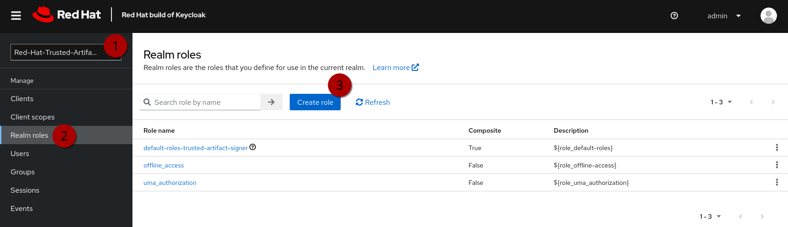
Create the roles tpa-user tpa-manager tpa-admin
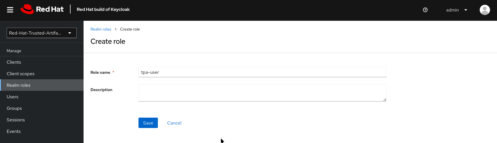
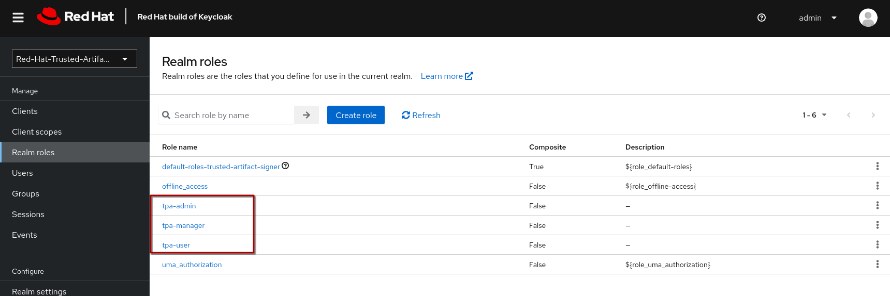
|
Client Scopes
In the same (1) "Trusted Artifact Signer" realm, (2) click on "Client Scopes", then (3) "Create client scope":
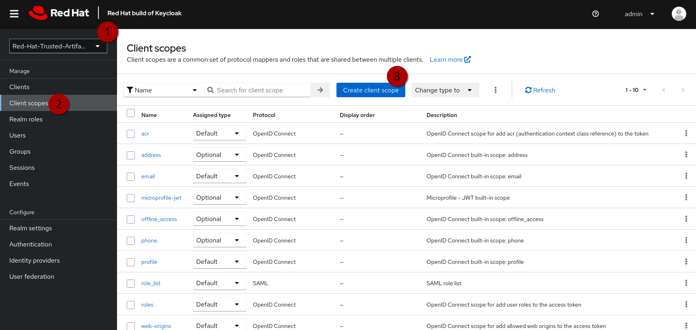
Create the scopes read:document create:document update:document delete:document and give them a description, if you want.
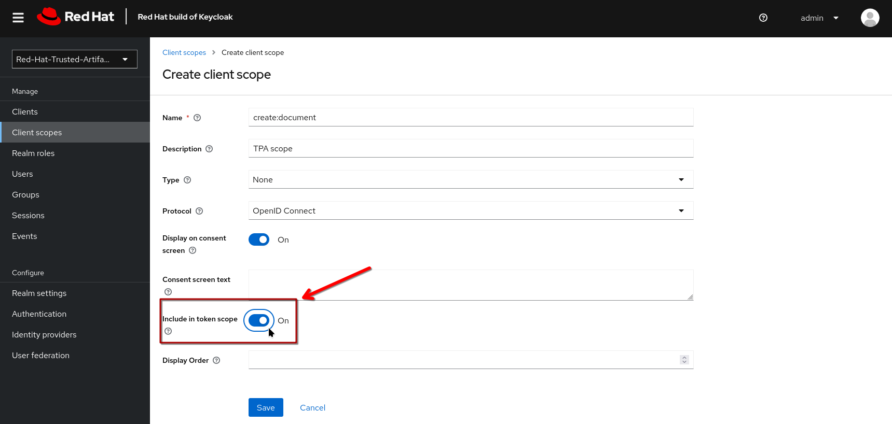
| Make sure you toggle the "Include in token scope" switch (default is "off", it needs to be "on") - if not, the scope will not be in the login token and you’ll get a lot of "403" errors when opening TPA. |
After saving (or later, opening a Scope from the Client Scopes list), you can assign a role under the "Scope" tab:
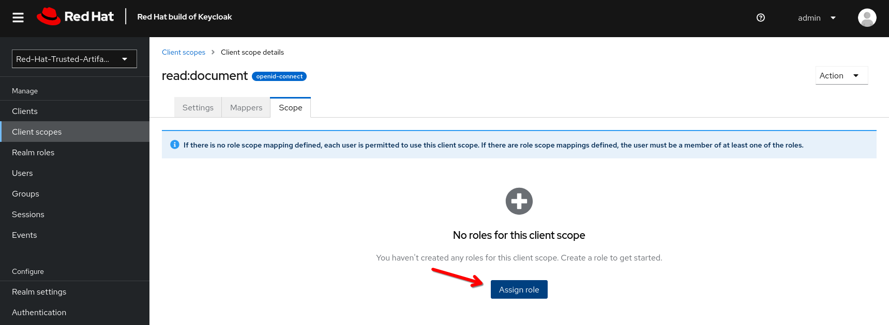
Assign all roles to the document:reader scope
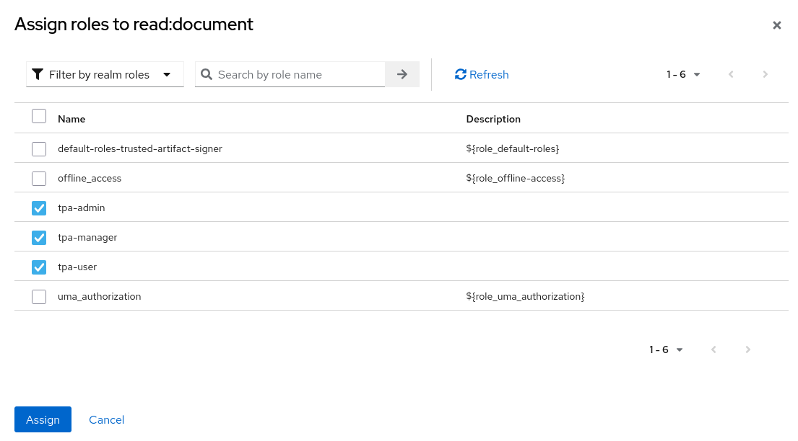
Assign the roles as follows
| Client Scopes | Roles |
|---|---|
|
|
|
|
|
|
|
|
Users
Now that we have the client scopes and assigned those to specific roles, we need to assign those roles to our users (or, in a production environment, more likely to groups of users).
In the same realm (1) go to users (2) and click on user1 (3):
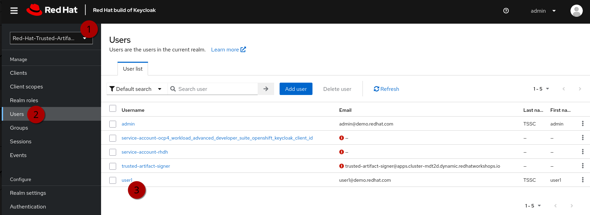
Click on the "Role Mapping" tab (4) and then "Assign Role" (5) and assign the tpa-users role to "user1":
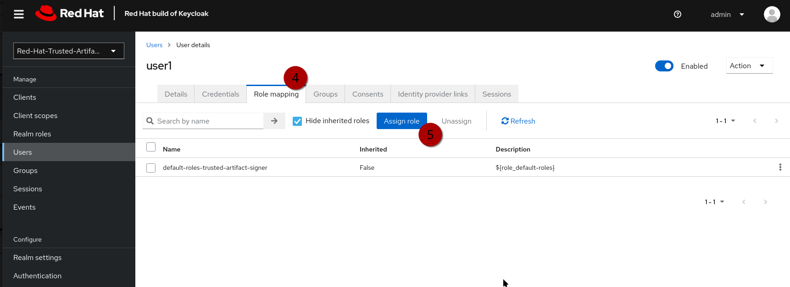 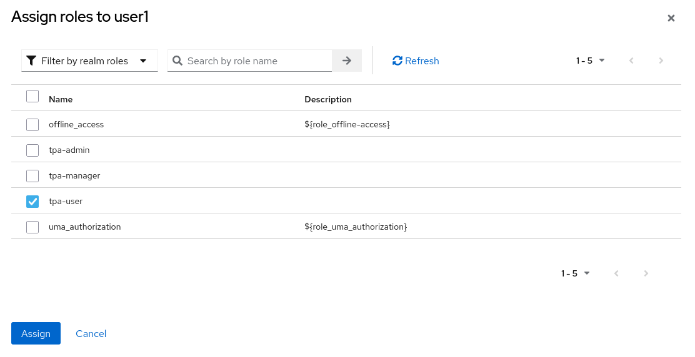
You should see the assigned role now:
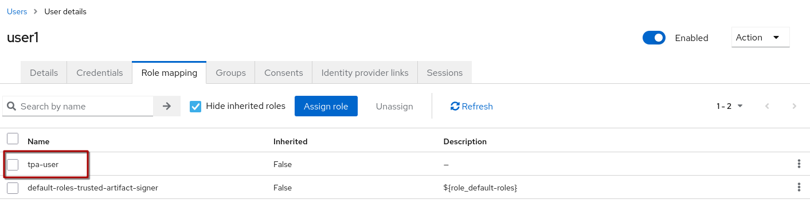
Now do the same for the admin user and assign the tpa-admin role to that user:
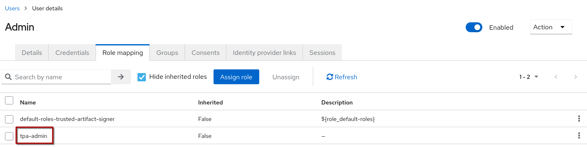
Clients
Now that we have the client scopes, have assigned these to new roles that we created and assigned those roles to users… we need the clients that provide us with the authentication endpoints for TPA:
In the same realm (1), go to Clients (2). Here, you could create the clients manually and configure them ()especially the client scopes that we need associated with this client - but we have created import files for you, so you can instead use "Import Client" (3).
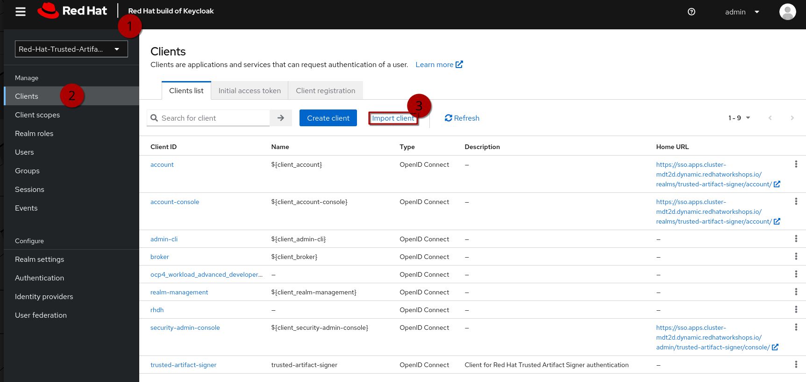
We need a "frontend" client that will handle the authentication with the UI and a "cli" client that we will use as a "technical user", or in Keycloak terminology, as a "Service Account" (not to be mistaken with a k8s ServiceAccount). Basically, it is a user with a set password to be used for service-to-service communication.
|
TPA doesn’t care if we use a "regular" user or a Keycloak "Service Account" for authentication. From a Keycloak / OIDC perspective, separating "Service Accounts" for machine communication from users is a good practice, even though you could have a regular user (e.g. "tpa@acme.com") for that use-case. |
Please download the
-
client_tpa-frontend.json(Right-click and "save as") -
client_tpa-cli.json(Right-click and "save as")
files to your machine and inspect them, if you like.
Frontend
First import the client_tpa-frontend.json file - it will populate all the fields and options that we need, then click "save".
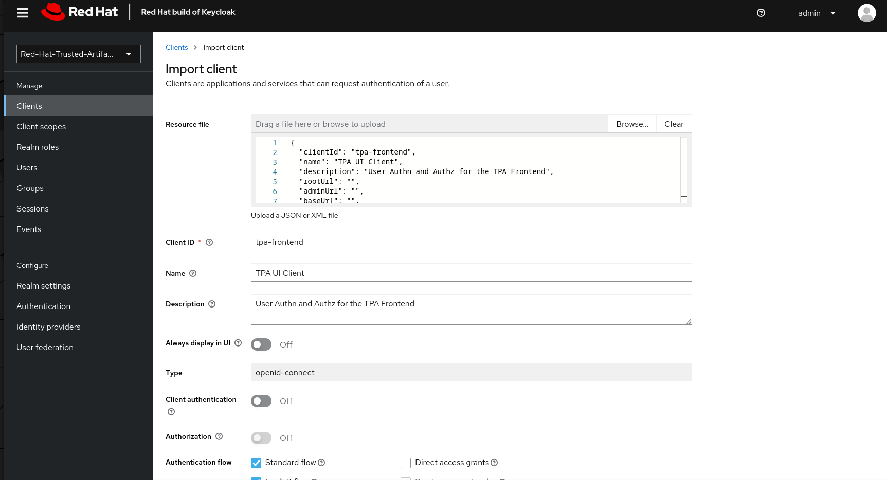 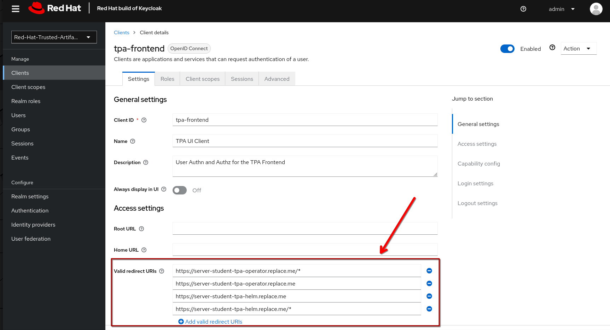
|
After saving the frontend client, replace the for your redirect URIs - if this is not set correctly, you will get an error when trying to login to the TPA UI. If you changed the namespace(s) where you install TPA, please amend accordingly. |
CLI ("Service Account")
Now, import the CLI client. When you do, you will notice that the "Client Authentication" is switched on (to access this client, the user will have to provide the client secret) and the "service account roles" box is ticked, meaning that this will generate a "technical user" that we can assign roles (remember, we need the roles for the client scopes that tell TPA what the user is allowed to do).
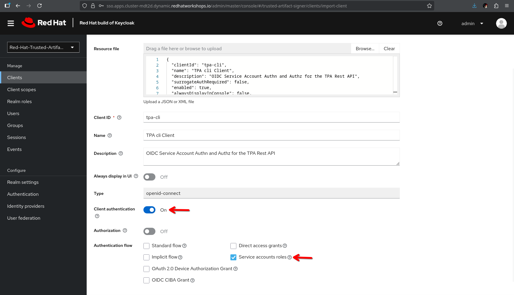
After saving, you can see in the "Credentials" tab, that the client has a client secret assigned.
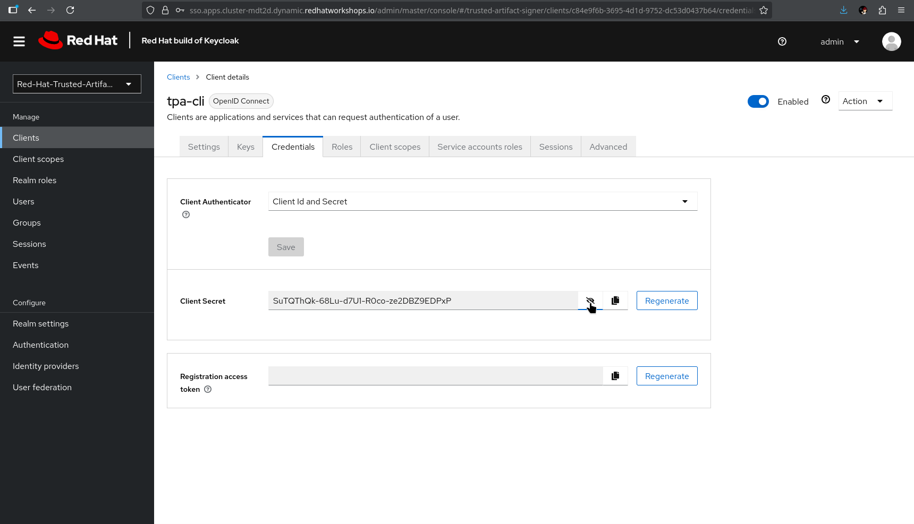
Now, go to the "Service Accounts Roles" tab and assign the tpa-admin role to the service account (unless you want to restrict what can be done via the client).
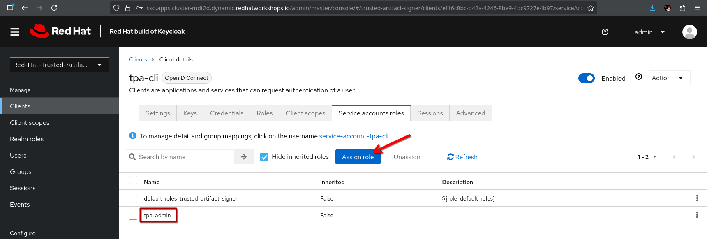
|
Alternatively, you can also assign that role via the "Users" view, since the client has automatically created that "service-account-<clientname>" user: 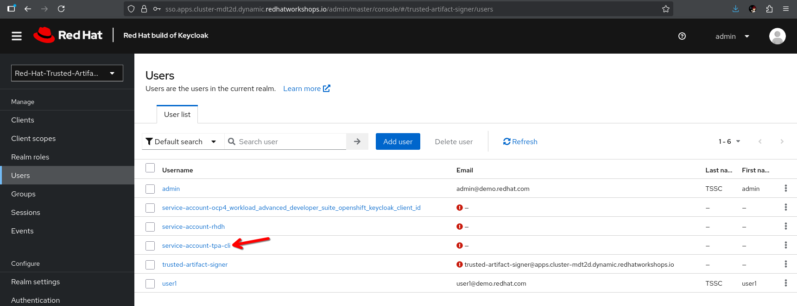 |
Last, not least, we need to create a k8s secret for the client secret that is referenced in the helm chart (and the operator-install).
If you haven’t changed the client secret from the imported client_tpa-cli.json file, you can go to the {openshift_console_url}/terminal[terminal^,window="terminal"] and use the secret-oidc-cli.yaml we have prepared for you:
cd ~/l3-enablement-helpers/prerequisites/
oc apply -f secret-oidc-cli.yamlbash-5.1 ~ $ cd ~/l3-enablement-helpers/prerequisites/
oc project student-tpa-operator
oc apply -f secret-oidc-cli.yaml
secret/oidc-cli createdOIDC Summary
Phew - you’ve made it through the OIDC prerequisites. The point here was not to generate a really boring wall of text, but to show what TPA needs to be successfully integrated with an existing Keycloak realm.
What we did:
In an existing realm, we
-
Created (realm) roles
-
Created custom client scopes, that TPA needs for Authorization
-
Assigned these scopes to the roles we created
-
Assigned these roles to users (thus assigned the scopes to users)
-
Created an OIDC "public" frontend client (with the "normal" OIDC authentication flow)
-
Created an OIDC "private" cli client (aka a client with a client secret)
-
Assigned the administrative role to that cli client
Now, let’s boldly go to the installation 🖖
|
Before we move on - Since TPA only supports Keycloak for authentication/authorization - if there is the need for integration with other providers: 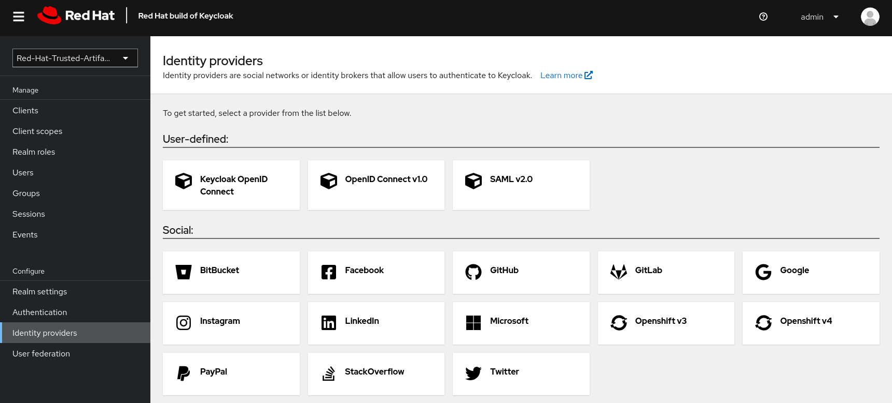 Keycloak’s Identity Provider (IdP) federation is designed exactly for this scenario. Here’s how it works:
Setting Up Role Mapping In your Keycloak admin console, for each Identity Provider you can configure Mappers to:
…but that is beyond the scope of this Lab. |
Operator Installation
The operator is currently in tech preview and has some issues handling multiple installations on the same cluster (it is also using helm). Since we already have installed a TPA for reference using this method, you might see some misleading errors, but the installation itself (and the resulting TPA) works.
|
Now that we have configured
-
storage
-
database and
-
OIDC
let’s go to the Operator Hub (just follow the link) and install the TPA Operator in our namespace (the Operator is namespace-scoped):
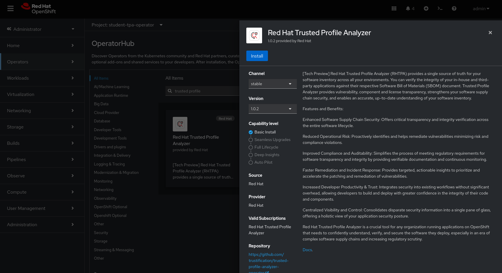
Make sure to install it to the correct namespace (for this exercise, we created student-tpa-operator at the beginning of this chapter).
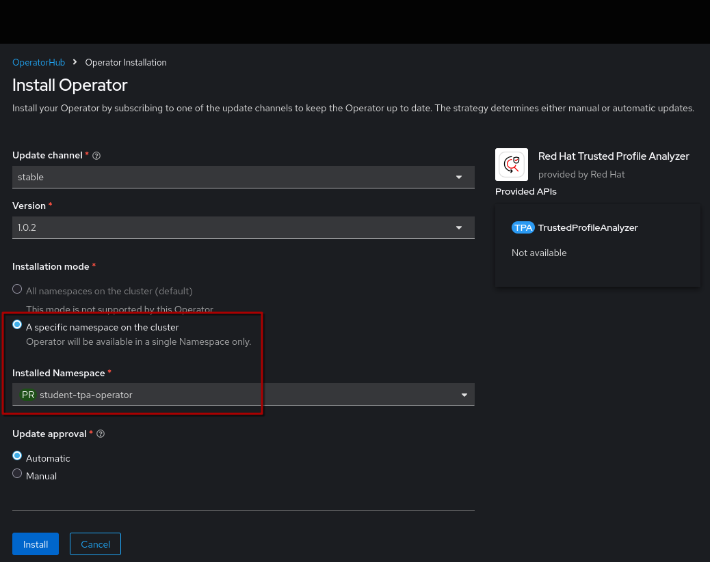
Once the installation has finished, go the the operator in your namespace and create a TrustedProfileAnalyzer instance.
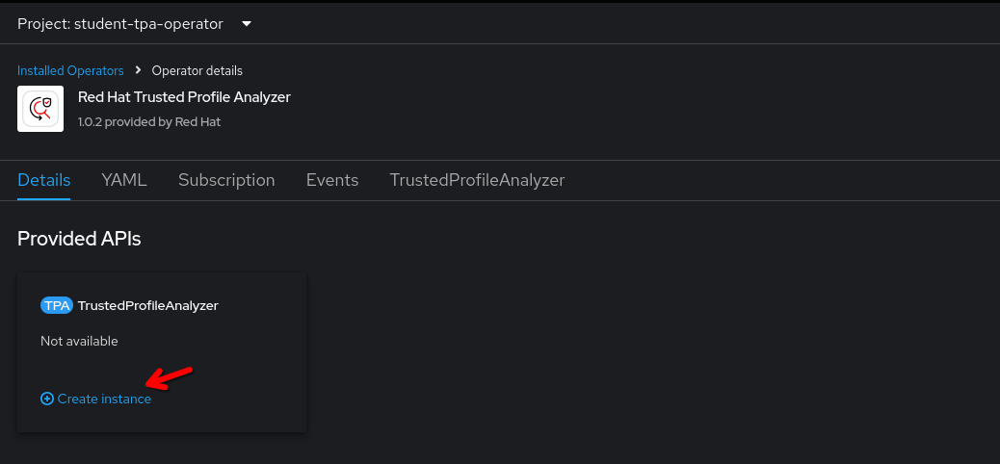
In the instance, switch to the YAML view.
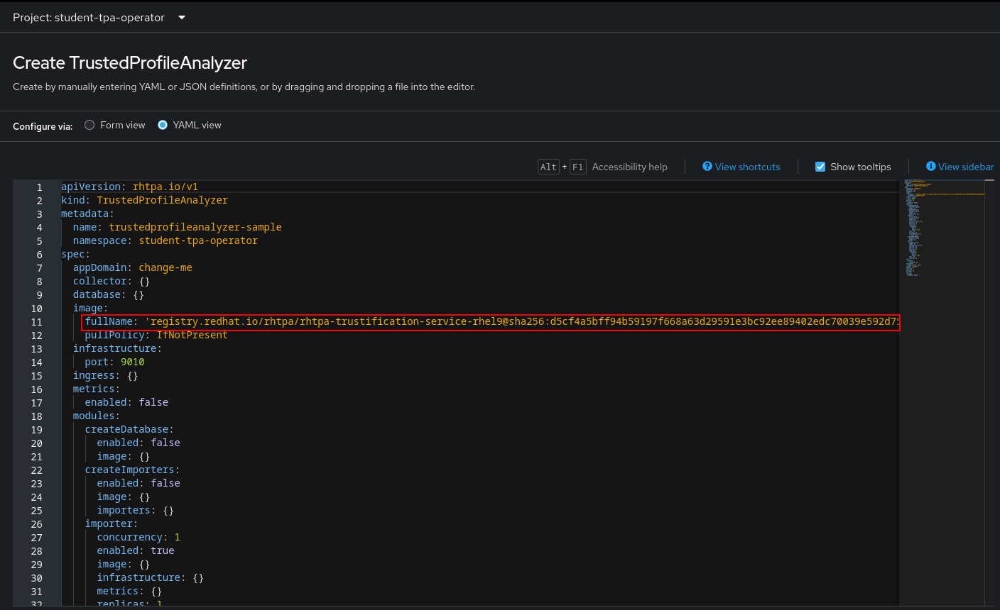
We have prepared a TrustedProfileAnalyzer.yaml file for you (right-click and download, or open the link and copy&paste)
|
Before you replace everything with the provided At the time of this writing, the Operator Version 1.0.2 with this image was current:
This will change over time, so please compare (or copy & paste to your local file before you paste it back to the operator Also, don’t paste & save just yet, there are some fields that you need to change - either locally before pasting into the |
What’s inside and what needs to be changed
In the spec.appDomain, replace <your-cluster-ingressdomain-here> with {openshift_cluster_ingress_domain}:
appDomain: -student-tpa-operator.<your-cluster-ingressdomain-here>
Do the same in the spec.oidc.IssuerUrl (this is Keycloak realm where we defined our clients and client scopes):
issuerUrl: 'https://sso.<your-cluster-ingressdomain-here>/realms/trusted-artifact-signer'
And, while you still have it in your clipboard, also for the spec.storage.region:
Even though it is called region here, for ODF we need to use the OpenShift Storage s3 endpoint, including the port :443. For AWS S3, you’d need the actual region (refer to the product documentation for setup with AWS services).
|
Since we’re in the storage section - you can use either s3 (as is recommended, and we created a bucket already), or you can comment the existing storage section and uncomment this section
#alternatively, uncomment for filesystem / PVC storage
# storage:
# type: filesystem
# size: 32Giwhich will create a PVC.
Sticking with s3, we need to get the actual bucket name to be set in the spec.storage.bucket field:
bucket: trustify-<run_s3.sh_from_your_namespace_to_get_the_bucket_name>
We can get that from the tpa-bucket-claim ConfigMap in our namespace, or by running the s3.sh script (which will also give us the s3 endpoint, which we already changed above).
cd ~/l3-enablement-helpers/prerequisites
oc project student-tpa-operator
./s3.shbash-5.1 ~/l3-enablement-helpers/prerequisites $ ./s3.sh
Access Key ID: uQJELScAXek96XcUUrAl
Secret Access Key: OFCB8spseTxVPFrUTc3nZecqi+D51IpIpvLBo9gt
Endpoint: https://s3-openshift-storage.apps.cluster-mdt2d.dynamic.redhatworkshops.io
Bucket Name: trustify-c443fd04-cc20-4455-ac54-f02921669428What else?
Importers
The spec.modules.CreateImporters.importers contains the definition and configuration for the various importers. These load (and update) TPA with cve, advisory and SBOM data.
By default, only the cve and osv-github importers are active (disabled: false) - without cve and advisory data, TPA couldn’t match vulnerabilities with SBOM packages.
Database
The spec.database, spec.createDatabase and spec.migrateDatabase contain the configuration for the postgresql database - since we already created that in the prerequisites section, along with the secret that is referenced here, no changes are required.
You will notice that the spec.database.sslMode: require has been commented - for "real" scenarios, this should be enabled, but we decided to keep the database setup simple here (no certificates added to the postgresql setup).
Ok, changed the values? Then let’s hit "Create"!
As expected (see the note in the beginning) the Operator install seemingly fails with helm error messages.
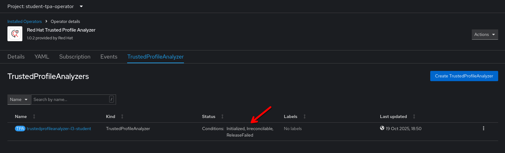 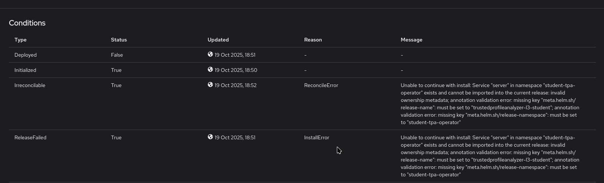
However, if you go to the Deployments Page, you can see the importer and server deployments with 1/1 pods.
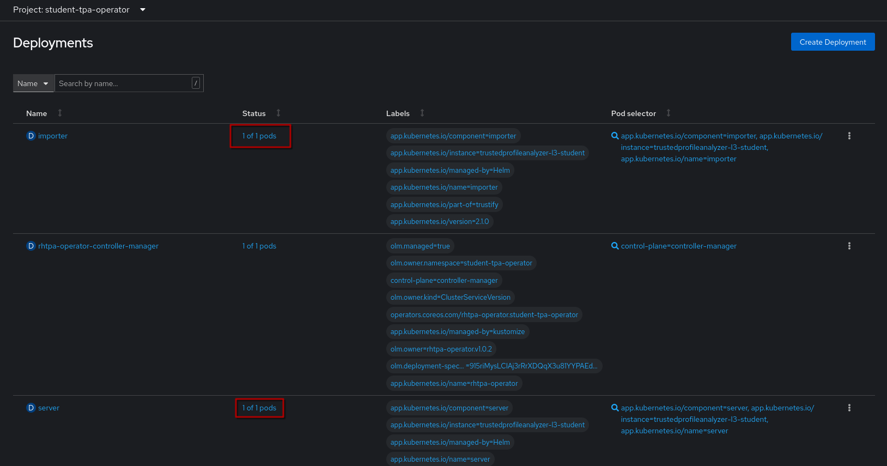
So, let’s quickly check the pod logs for:
1) The importer pod
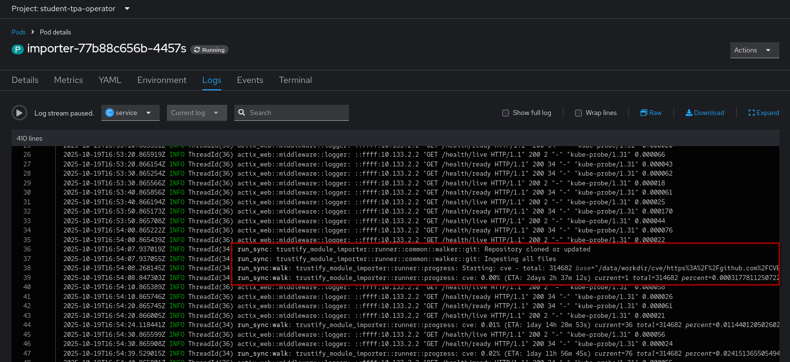
If configured correctly, the importer will start with cloning the cve repository and importing them into the graph database.
2) The server pod
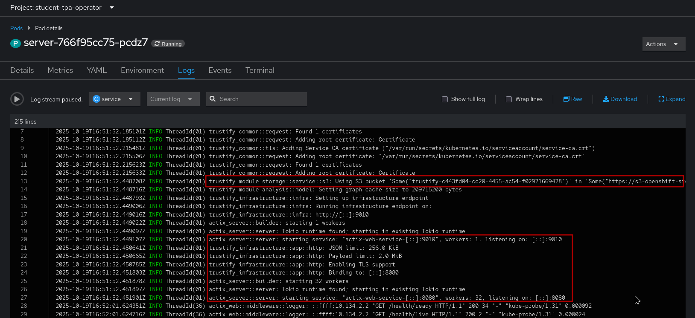
If configured correctly, the server will start but there will not be much activity, aside from the health/readiness probes.
Lastly, we should check the Route that has been created:
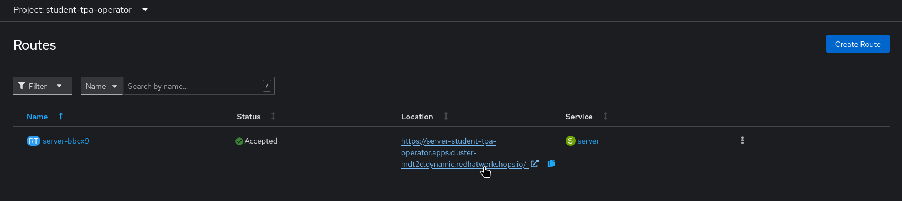
|
Verification
Frontend
After opening the route URL and logging in with user1 or admin, you should see the TPA UI ✅:
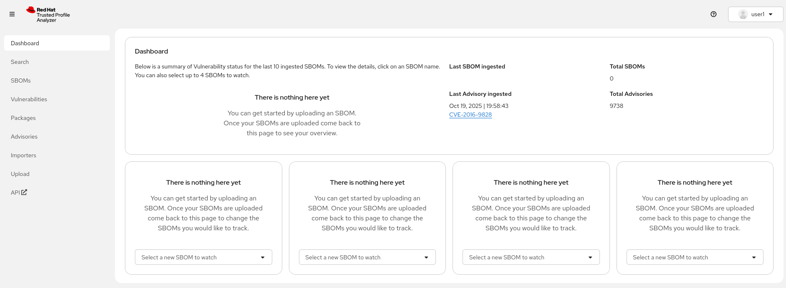
|
Should you see network-related errors in the TPA UI, this is most likely due to some OIDC misconfiguration. Open the developer perspective of your browser of choice and check if you get 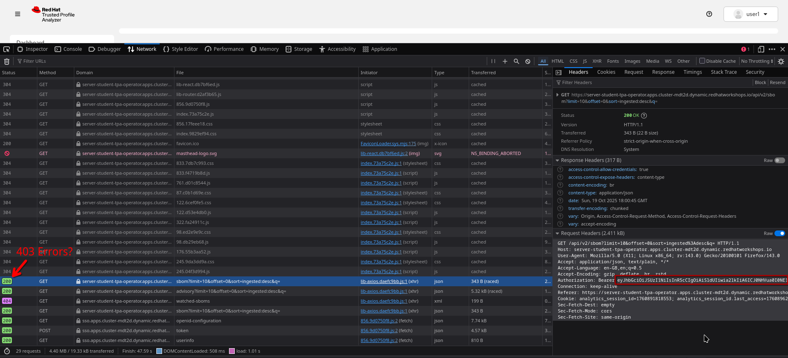 Then, copy the Take note of the "scope" OIDC claim - in this case it contains the |
CLI
To verify the CLI (REST API) connectivity, go to the {openshift_console_url}/terminal[terminal^,window="terminal"] and inspect the verify-sbom-upload.sh we prepared for you:
cd ~/l3-enablement-helpers/tpa-operator
oc project student-tpa-operator
cat verify-sbom-upload.shThe verification is quite straightforward:
-
We obtain the
access tokenusing theclient_idandclient_secretthat we set earlier -
Using that
access token, we post to the/api/v2/sbomendpoint (we have prepared a simple SBOM to test this with).
In the same way, you would use that in a CI Task, uploading an SBOM that has just been generated.
Now, let’s do this:
./verify-sbom-upload.shbash-5.1 ~/l3-enablement-helpers/tpa-operator $ ./verify-sbom-upload.sh
Access Token:
==================================================================================================
eyJhbG[...]GGHw
==================================================================================================
Uploading homebanking SBOM
{"id":"urn:uuid:0199fdf6-f4ce-7fd1-8d7e-89c8b03cafb8","document_id":"urn:uuid:18ca2b81-e4d2-4c6a-8bb5-54bfb6ae47a3/1"}
bash-5.1 ~/l3-enablement-helpers/tpa-operator $You should see this now in your TPA instance after a few moments, including the labels we assigned ✅.
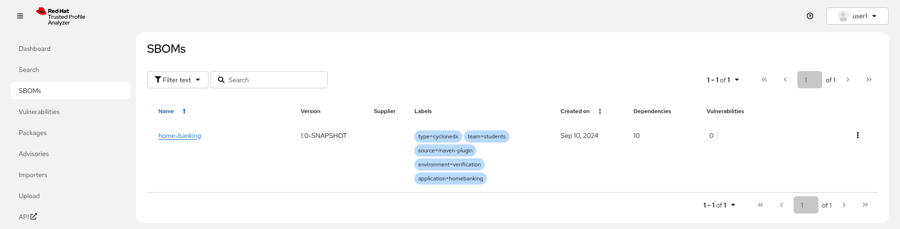
|
If you are wondering why there are no vulnerabilities - we have imported the SBOM right after installation, but the importer is still running, importing CVEs and security advisories. So, this will take a while - on a system with fully imported advisory/cve sources, the vulnerabilities will be available momentarily. |
Helm Installation
|
If you want to use
The template file you’d need to modify (with the RWO PVC) is
This is not possible for the operator-based install, since the helm chart being used cannot be modified and the official chart uses RWO. |
For the helm-based installation, we will use the student-tpa-helm namespace, and we had created the appropriate redirect_URIs in the frontend OIDC client, which we will reuse.
So, first, let’s get ready to configure the database, s3 bucket and the OIDC secret in this namespace:
Go to your {openshift_console_url}/terminal[terminal^,window="terminal"] and run the following commands:
cd ~/l3-enablement-helpers/prerequisites
oc project student-tpa-helm
oc apply -f postgresql-openshift.yaml
oc apply -f tpa_objectbucketclaim.yaml
oc apply -f secret-oidc-cli.yaml
./s3.sh
cd ../tpa-helm/
ls -alSame as in the operator-based exercise, we have prepared values files for you:
-
A values.yaml file for the S3-based installation
-
A values-fs.yaml file, if you want to try with the filesystem (for quick testing and PoC/non-production)
-
A values-importers.yaml file, with the default settings (osv-github and cve enabled, the others disabled). There is no need to modify any value here, unless you want to.
Since we’re running helm to install, you don’t have to download them - but you need to modify them in your terminal session from above:
Use your editor of choice (nano or vim) and change the following values (for values.yaml or 'values-fs.yaml'):
In the storage.region field, replace <your-cluster-ingressdomain-here> with {openshift_cluster_ingress_domain}:
In storage.bucket, paste the value for the trustify bucket that we just got as output from the s3.sh script.
bucket: trustify-<run_s3.sh_from_your_namespace_to_get_the_bucket_name>
In the oidc.issuerUrl field, also replace the cluster ingress domain:
If you decide to try out the filesystem storage, obviously you don’t have to change any value there - these are left in the values-fs.yaml file for reference, but commented out. You still need to change the oidc.issuerUrl field, but that’s all.
|
Ok, ready to go?
Let’s helm!
source appdomain.sh
helm repo add openshift-helm-charts https://charts.openshift.io/
helm repo update
helm upgrade --install redhat-trusted-profile-analyzer openshift-helm-charts/redhat-trusted-profile-analyzer -n $NAMESPACE --values values.yaml --values values-importers.yaml --set-string appDomain=$APP_DOMAIN_URLsource appdomain.sh
helm repo add openshift-helm-charts https://charts.openshift.io/
helm repo update
helm upgrade --install redhat-trusted-profile-analyzer openshift-helm-charts/redhat-trusted-profile-analyzer -n $NAMESPACE --values values.yaml --values values-importers.yaml --set-string appDomain=$APP_DOMAIN_URL
NAMESPACE is: student-tpa-helm
APP_DOMAIN_URL (needed in helm values) set to:
-student-tpa-helm.apps.cluster-mdt2d.dynamic.redhatworkshops.io
"openshift-helm-charts" already exists with the same configuration, skipping
Hang tight while we grab the latest from your chart repositories...
...Successfully got an update from the "backstage" chart repository
...Successfully got an update from the "rhtap" chart repository
...Successfully got an update from the "openshift-helm-charts" chart repository
...Successfully got an update from the "bitnami" chart repository
Update Complete. ⎈Happy Helming!⎈
Release "redhat-trusted-profile-analyzer" does not exist. Installing it now.
NAME: redhat-trusted-profile-analyzer
LAST DEPLOYED: Mon Oct 20 14:38:19 2025
NAMESPACE: student-tpa-helm
STATUS: deployed
REVISION: 1
NOTES:
OpenShift:
Detected: true
Use Service CA: true
Console:
server-student-tpa-helm.apps.cluster-mdt2d.dynamic.redhatworkshops.ioVerification
Frontend
So, you can open your helm-based install of TPA now from here, and after logging in with user1 or admin, you should see the TPA UI based off of the student-tpa-helm namespace ✅:
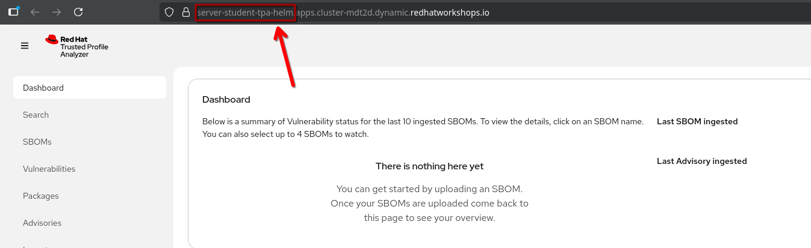
CLI
We have prepared the verification script in the tpa-helm directory as well:
cd ~/l3-enablement-helpers/tpa-helm
oc project student-tpa-helm
./verify-sbom-upload.shSo, we should see the uploaded SBOM now in the TPA SBOM View after a few moments, including the labels we assigned ✅.
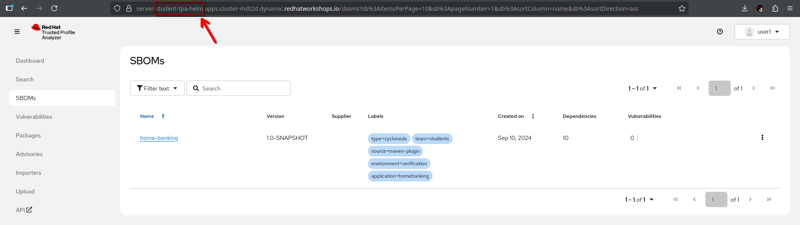